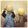

最近话题/最热话题
- 阮义忠摄影工作坊第五季哈尔滨站 学员名单出炉[顶][精]
- 阮义忠摄影工作坊第五季哈尔滨站入选学员名单公布啦！ 他们分别是： 小妮 Stevenxiao 韦树祥 咔沃 雕刻时光 Henry 晶石影艺 任红伟 贺兰 恭喜9位学员！8月10日，让我们相约哈尔滨！ ...
- 回应 : 0/最后回应时间 : 2015-08-10 10:47
- 小馬第六天學習心得[顶]
- 2014.10.5第六天 想著距離離開這個暗房的時間越來越短了，我就巴不得躲在暗房裏多放一些照片，畢竟熟能生巧。現在我已經可以離開那些筆記很熟練地操作機器，暗房的神奇今天 通過赤血鹽的使用以及大尺寸的放大已經讓我五體投地，那種通過自己的手控制作品的感覺是數碼攝影完全無法企及的。
- 回应 : 8/最后回应时间 : 2015-08-10 10:47
- imagining的学习心得（杭州站）第七天[顶][精]
- imagining的学习心得（杭州站）第七天 “不要学会骑脚踏车就不上路了” 阮老师说，摄影需要坚持，不坚持什么都是空的。而技术是让内容有更好的表现。“不要学会骑脚踏车就不上路了”。无论数码还是胶片，最重要的是建立态度，没 有绝对的好与坏，关键看如...
- 回应 : 0/最后回应时间 : 2015-08-10 10:47
- xiazhe的工作坊学习心得（总结）[顶][精]
- 美好的一周,参加阮先生摄影工作坊学习已近尾声，原本每天要写的小结一直还没完成，索性 今晚 来个总结。阮先生工作坊是我期盼已久的，去年第一季我便报了名，后落选。因缘际会这次终于能上先生的课程了，也结识了许多志...
- 回应 : 0/最后回应时间 : 2015-08-10 10:47
- 孟璟的学习心得（杭州站）第七天 20141005[顶]
- 砂砂今天在分享的时候，好几次我眼睛湿了，他说，这几天自己想了很多。我想，对于我们每一个人，这几天都有着特别而长远的意义。若干年后，我相信我们每一 个人都不会忘记大家曾经跟老师和师母度过的这 8 天。这是彼此的缘分，我真心感谢认识每一位朋友，从每一位身上都感受到了很多光...
- 回应 : 0/最后回应时间 : 2015-08-10 10:47

- 应婷婷学习第七天[顶]
- 昨天中午一下课，我与华鹭丹就租上自行车，从万松岭路的东头往西赶，为的是去浙江美术馆的晓枫书屋找阮老师的书。 第一次骑自行车在万松岭路上，万松岭路是 西湖边的一条小路，幽静优雅，与此时人挤人的南山路形成了强烈的反差。 秋日的阳光很好，透过树叶间的缝细 柔柔...
- 回应 : 0/最后回应时间 : 2015-08-10 10:47
- 陈镜伊 厦门第二期学习心得（第四天）[顶][精]
- 上课之前，老师讲了一段曾经发生的经历，不得不敬佩老师的为人处世之道。老师告诉我们试着把碰到的事情变成好事，这句话对我影响很深。也许有些事情不会像 我们所看到的那样糟糕，事情是会随着我们所想的方向去发展的，到最后不管是想要的还是不想要的也许都会被召来。
- 回应 : 0/最后回应时间 : 2015-08-10 10:47
1
2
3
4
5
6
7
8
...
88